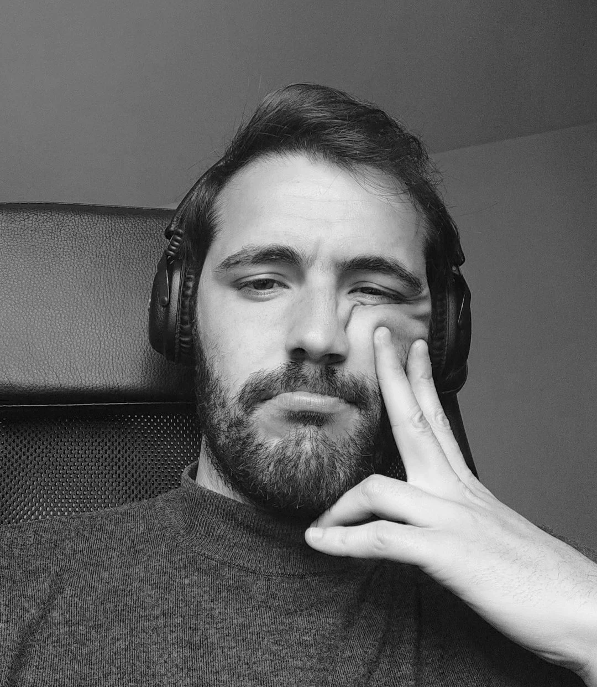

manuel.marcoscelador@gmail.com
– Actualmente en Ogilvy Barcelona como Copywriter.
> Anteriormente, he trabajado en el equipo creativo de Audi en DDB Barcelona, la consultora de branding Séptimo, en la consultora de estrategia creativa Nadie The Creative Think Tank, en la agencia creativa Sra. Rushmore y, en mi inicio, la agencia creativa Grey Madrid.
> En cuanto a mi formación, tengo el grado en Publicidad y Relaciones Públicas por la Universidad Complutense de Madrid y el máster en Creatividad Integral en Brother Barcelona ‘19
> Sobre reconocimientos y premios:
* Oro en Premios LUX ‘24 por ‘La carga’ para Fundación Vicki Bernadet
* Shortlist GoliAds ‘25 por ‘Soy yo’ para Fundación Vicki Bernadet
* Plata en Aspid ‘25 en categoría Spot TV, por ‘DormiWorld’ para Laboratorios Esteve.
* Oro en Concurso Push The Power Brother ‘19
* Bronce en Concurso Push the Power Brother ‘19
* 4 Shortlist en Concurso Push the Power Brother ‘19
* Primer puesto en el Tour de Jóvenes Talentos del Club de Creativos ‘17 junto a Marta Taboada.
* Finalista Concurso Nacional “Tú y el Gurú ‘17”, junto a Marta Taboada.
* Bronce en Concurso público ‘Imposibles de Vender’ Brother ‘16
* Ganador Versus Jóvenes Talentos del cdec ‘16
* Plata de Concurso Nacional “Tú y el Gurú ‘15”, organizado por la Academia de la Publicidad Española, junto a Álvaro Fernández.
* Nota media Grado: 8,4 + 7 MH, ‘12-’17